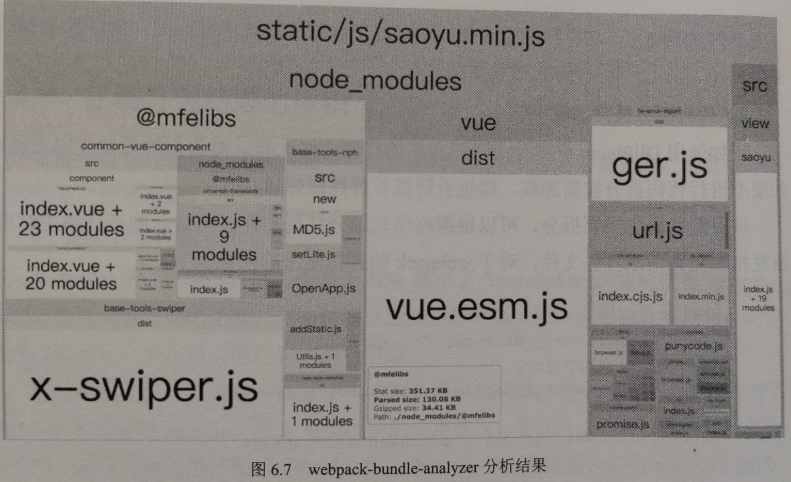

2024-06-08 14:16:33 · YinHao
资源压缩和合并的优点:
减少 http 的请求数量
减少 http 请求的资源大小
HTML 压缩的三种方式：
在线网站提供 HTML 压缩服务
基于 nodejs 的工具：html-minifier
const fs = require("fs");
const { minify } = require("html-minifier");
fs.readFile("./test.html", "utf8", (err, data) => {
if (err) throw err;
fs.writeFile(
"./test_mini.html",
minify(
data,
{
removeComments: true, // 去掉注释
collapseWhitespace: true, // 去除空格
minifyJS: true, // 压缩 HTML 中的 JavaScript
minifyCSS: true, // 压缩 HTML 中的 css
},
() => console.log("success")
)
);
});
CSS 代码也能进行压缩，而且很有必要去压缩。
也可以用 html-minifier 针对 HTML 中的 CSS 进行压缩。
还可以使用 clean-css 进行 CSS 压缩。
const CleanCSS = require("clean-css");
const input = "a { font-weight: bold }";
const options = {
// 配置项
};
// 压缩并输出结果
const output = new CleanCSS(options).minify(input);
代码语义缩减和优化
通过对 JavaScript 的压缩可以将一些变量的长度进行缩短，比如说原本一个很长的变量名经过压缩后，可以用很短的像 a、b 来代替，这样能进一步有效的压缩 JavaScript 的代码量，同样还可以针对一些重复代码进行优化，比如去除重复的变量赋值，将一些无效的代码进行缩减与合并的优化。
let a = 1;
// 又进行了多余的赋值操作
a = 2;
// 经过优化后，仅保留 let a = 2 的赋值
代码混淆保护
混淆变量与方法的命名。
对于公司而言，HTML 压缩可有可无，但是 CSS 与 JavaScript 压缩确是必要进行的。
如何压缩
JavaScript 压缩处理也有类似的第三方库可供使用：uglifyJS2，
const UglifyJS = require("uglify-js");
const jsCode = "function add(first, second) { return first + second }";
const options = {
// 配置项
};
const result = UglifyJS.minify(code, options);
随着前端功能越来越复杂，显然不可能将所有 JavaScript 代码都写在一个文件里，因为这样不仅可读性差而且也不具有维护性，所以需要将一些功能相对独立的模块拆出来，写在单独的文件中，而原本的 index.js 仅作为整个系统的入口文件，负责引入其他模块。
// index.js
import Main from "./main.js";
import SubModule from "./sub-module.js";
// 执行入口程序
new Main();
模块定义方式：
function Main() {
//...
}
export default Main;
推荐的做法是局部安装，然后在使用时通过 npx 的方式，调用项目内部的 webpack 进行打包构建。
该配置文件需要定义在 webpack 打包构建的根目录下，其文件名为 webpack.config.js，
const path = require("path");
module.exports = {
entry: {
main: "./src/index.js",
},
output: {
filename: "bundle.js",
path: path.resolve(__dirname, "dist"),
},
};
webpack 的优化瓶颈主要体现在两方面：
打包构建过程太浪费时间
打包结果体积太大
对大部分前端项目来说，每次的修改调试都有可能需要全部或部分的代码进行打包构建，可想而知如果这个过程十分耗时，将会非常影响前端工程师的开发效率，
并且如果打包结果过大，必然也让 HTTP 的单次请求花费过长时间。
项目中尽可能使用最新稳定版本的 webpack、nodejs、npm或yarn 能有效地提升打包构建的效率。
根据具体情况使用 include 或 exclude，在尽可能少的模块上执行 Loader，webpack 配置如下：
const path = require("path");
module.exports = {
entry: {
main: "./src/index.js",
},
module: {
rules: [
// 对 js 文件的打包规则
{
test: /\.js$/,
exclude: /node_modules/,
use: [
{
loader: "babel-loader",
},
],
},
{
// 对于图片文件的打包规则
test: /\.(jpg|png|gif)$/,
use: {
loader: "url-loader",
options: {
name: "[name]_[hash].[text]",
outputPath: "images/",
limit: 10240,
},
},
},
],
},
output: {
filename: "bundle.js",
path: path.resolve(__dirname, "dist"),
},
};
对于图片文件则没有必要通过 include 或 exclude 来降低 loader 的执行频率，因为无论哪里引入的图片，最后打包都需要通过 url-loader 对其进行处理，所以 include 或 exclude 的语法并不适用所有 loader 类型，而根据具体的情况而定。
使用 include 或 exclude 可以帮助我们规避对庞大的第三方库文件的处理，但仅通过限定文件处理范围所带来的性能提升其实是有限的。
此外，如果开启缓存将构建结果缓存在文件系统中，则可让 babel-loader 的工作效率得到成倍的增加，处理方式也很简单，只需为 loader 增加相应的参数即可。
loader: "babel-loader?cacheDirectory=true"
通常我们会根据前端代码的执行环境是线上环境还是开发环境来规定不同的 webpack 配置内容，
比如线上环境中，我们希望打包的代码尺寸尽可能小，用户加载的速度尽可能快，所以需要对代码进行压缩，下面的配置项声明使用 OptimizeCSSAssetsPlugin 插件来压缩 CSS 资源文件。
如果在开发环境下，由于不需要考虑代码对用户的加载速度，并且压缩了反而会降低代码的可读性，增加开发成本，所以在开发环境下不用引入代码的压缩插件。
module.exports = {
entry: {},
module: {},
optimization: {
minimizer: [new OptimizeCSSAssetsPlugin({})],
},
output: {},
};
建议使用官方推荐的插件。
配置 resolve 参数可以带来很多便利，比如：
使用 extensions 省略引入 Js 文件的后缀名
使用 alias 减少书写所引入模块的多目录层级
…
module.exports = {
resolve: {
extensions: ["js", "jsx", "ts"],
alias: {
cpn: path.resolve(__dirname, "src/component"),
},
},
};
前端项目中经常会用到庞大的第三方库，
而每当发生修改需要重新进行打包时，webpack 会默认去分析所有引用的第三方库，最后将其打包进我们的项目代码中。
通常，第三方组件包的代码是稳定的，不更换所引用的版本其代码是不会发生修改，所以这里给出一个优化的思路。
我们仅需要在第一次打包时去分析这些第三方库，只有当依赖自身发生版本变化时才会重新进行打包。
这便会用到 Dllplugin
该插件会把第三方库单独打包到一个文件中，作为一个单纯的依赖库，它不会和我们的项目代码一起参与重新打包，只有当依赖自身发生版本变化时才会重新进行打包。
使用 Dllplugin 处理文件的过程可分为两步:
首先基于动态链接库专属的配置文件打包 dll 库文件
然后再基于 webpack 的构建文件打包项目代码
实例：
import React, { Component } from "react";
import ReactDom from "react-dom";
import _ from "lodash";
class App extends Component {
render() {
return (
<div>
<div>{_.join(["hello", "world"], " ")}</div>
</div>
);
}
}
这里引入三个 React 项目经常会遇到的第三方库 react、react-dom、lodash，如果我们不进行任何处理，每当修改该文件后进行重新打包，则会引起 webpack 去分析它们，若打包次数频繁，显然会浪费许多时间。
接下来进行优化，具体分为两步：
首先将所依赖的第三方库打包成 dll 文件
然后检查第三方库的版本是否在其后的迭代中发生了变化，若无变化就都使用之前的打包结果
这里可以为第三方库创建单独的配置文件：
// 可定义文件名为 webpack.dll.js 区别于主配置文件
module.exports = {
mode: "production",
enrty: {
// 所引用的第三方包
vendors: ["react", "react-dom", "lodash"],
},
output: {
filename: "[name].dll.js", // 输出文件名，即为 vendors.dll.js
path: path.resolve(__dirname, "../dll"), // 打包后的输出路径
library: "[name]", // 第三方包导出的全局变量名
},
// 分析并输出第三方包的映射关系
plugins: [
new webpack.DllPlugin({
name: "[name]", // 所要分析的包名
// 映射关系输出地址
path: path.resolve(__dirname, "../dll/[name].manifest.json"),
}),
],
};
该配置文件中将 react、react-dom、lodash 三个包的包名存储在数组中，并赋值给 vendors，其含义是经过打包后，这三个包归于一个名为 vendors 的包。
output 中声明了该包的文件名及输出路径，library 字段表示该第三方包对外暴露的引用名，即在其他地方可以使用该字段引用包中的内容。
最后使用 webpack 中的 DllPlugin 插件对该包中的映射关系进行分析，并将结果输出到指定路径下的 json 文件。
然后我们需要在 webpack 主配置文件中，声明对上述打包好的第三方包的使用规则：
// 此为 webpack 主配置文件，
module.exports = {
plugins: [
// 引入打包的第三方包
new AddAssetHtmlWebpackPlugin({
filepath: path.resolve(__dirname, "../dll/vendors.dll.js"),
}),
// 引入第三方包的映射关系
new webpack.DllReferencePlugin({
manifest: path.resolve(__dirname, "../dll/vendors.manifest.json"),
}),
],
};
这样配置的意思是首先引入第三方包的打包结果路径，其次引入第三方包的映射关系，
当发生重新打包构建时，webpack 会首先查看引用的第三方包是否包含在已建立的映射关系文件 vendors.manifest.json 中，若存在便通过所声明的全局变量 vendors 去使用，若不存在便去 node_modules 中获取所需的模块，动态的进行打包操作。
上述方式虽然能够降低重复打包构建的时间，但将项目中的所有第三方包都打包进一个文件中，势必会导致其体积过大。
所以在实际项目中，我们也应根据各个第三方包的大小进行拆分，
// webpack.dll.js
module.exports = {
entry: {
vendors: ["lodash"],
react: ["react", "react-dom"],
},
};
如此执行，webpack 构建后会生成 4 个文件：vendors.dll.js | vendors.manifest.json、react.dll.js | react.manifest.json
同时对应的主配置的文件也需要进行相应的修改，
const plugins = [];
// 读取 /dll 路径下的所有打包文件
const files = fs.readdirSync(path.resolve(__dirname, "../dll"));
// 使用循环方式引入相应的代码文件和映射文件
files.forEach((file) => {
// 通过正则过滤目标文件
if (/.*\.dll.js/.test(file)) {
plugins.push(
new AddAssetHtmlWebpackPlugin({
filepath: path.resolve(__dirname, "../dll", file),
})
);
}
if (/.*\.manifest.json/.test(file)) {
plugins.push(
new webpack.DllReferencePlugin({
manifest: path.resolve(__dirname, "../dll", file),
})
);
}
});
module.exports = {
plugins,
};
webpack 是单进程的，就算有多个任务同时存在的，它们只能一个一个排队依次进行，这是 nodejs 的限制。
但大多数 CPU 已经都是多核的，我们可以使用 happypack 充分释放 CPU 在多核并发方面的优势，帮助我们把打包构建任务分解为多个子任务并发执行，这将大大提高打包的效率，
// 引入 happypack
const Happypack = require("happypack");
// 创建进程池
const happyThreadPool = Happypack.ThreadPool({
size: os.cpus().length,
});
module.exports = {
modules: {
rules: [
//...
{
test: /\.js$/,
loader: "happypack/loader?id=happyBabel",
},
],
},
plugins: [
new Happypack({
id: "happyBabel",
threadPool: happyThreadPool, // 指定线程池
loader: ["babel-loader?cacheDirectory"],
}),
],
};
删除冗余代码
使用 Tree-shaking，它能根据 import、export 的模块导入导出语法，
在构建编译过程中分析每个模块是否被真实使用，对于没有用到的代码，会在最后的打包结果中删除。
容易看出 Tree-shaking 对处理模块级的代码冗余比价擅长，但对更细粒度的代码冗余，比如 console 语句，注释等，可能就需要在 CSS 和 JavaScript 压缩过程中进行处理了，
常用的方式是通过 uglifyjs-webpack-plugin 来实现，具体配置方式如下:
const UglifyJsPlugin = require("uglifyjs-webpack-plugin");
module.exports = {
plugins: [
new UglifyJsPlugin({
cache: true, // 开启缓存
parallel: true, // 允许并发执行
compress: {
drop_console: true, // 删除代码中所有的 console 语句
reduce_vars: true, // 把代码中使用多次的静态值定义成变量
},
output: {
comment: false, // 删除代码中的所有注释
beautify: false, // 删除多余空格，让最后输出的代码尽量紧凑
},
}),
],
};
代码拆分按需加载
如果不进行代码拆分按需加载，则也会降低首屏性能体验。
项目源代码也需要拆分，可以根据路由来划分打包文件，当访问到不同路由时再触发相应回调请求打包文件，对于 webpack 的打包输出的配置如下:
module.exports = {
output: {
path: path.join(__dirname, "/../dist"),
filename: "app.js",
publicPath: defaultSettings.publicPath,
chunkFilename: "[name].[chunkhash:5].chunk.js",
},
};
以 React 项目为例，在配置路由时还需要添加如下内容:
const getComponent = (location, callback) => {
require.ensure(
[],
(require) => callback(null, require("../pages/MyComponent").defualt),
"mine"
);
};
//...
<Route path="/mine" getComponent={getComponent}>
此处的关键方法就是 require.ensure 这个异步方法，webpack 会将我们这里定义的组件单独打包成一个文件，仅当路由跳转到 mine 时，才会触发回调去获取 MyComponent 组件的内容。
可视化分析

该工具使用起来也很方便:
const BundleAnalyzerPlugin =
require("webpack-bundle-analyzer").BundleAnalyzerPlugin;
module.exports = {
plugins: [
new BundleAnalyzerPlugin({
analyzerMode: "server",
analyzerHost: "127.0.0.1",
analyzerPort: 8888,
reportFilename: "report.html",
openAnalyzer: true,
generateStatsFile: false,
statsOptions: null,
logLevel: "info",
}),
],
};